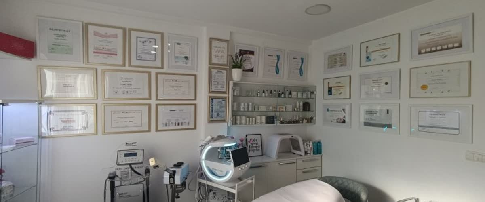

Tretmani lica
Protokoli za zdravu, blistavu kožu — od dubinskog čišćenja do nege zrele kože.
- Čišćenje lica — uklanja nečistoće, otvara pore i vraća svežinu koži.
- Hidratacija — intenzivno vlaži i obnavlja barijeru kože, idealno za suvu i umornu kožu.
- Nega zrele kože — fokus na svežiji izgled, mekoću i osećaj čvrstine.
- Mezoterapija (kozmetička) — nanošenje aktivnih seruma radi hidratacije, revitalizacije i sjaja.